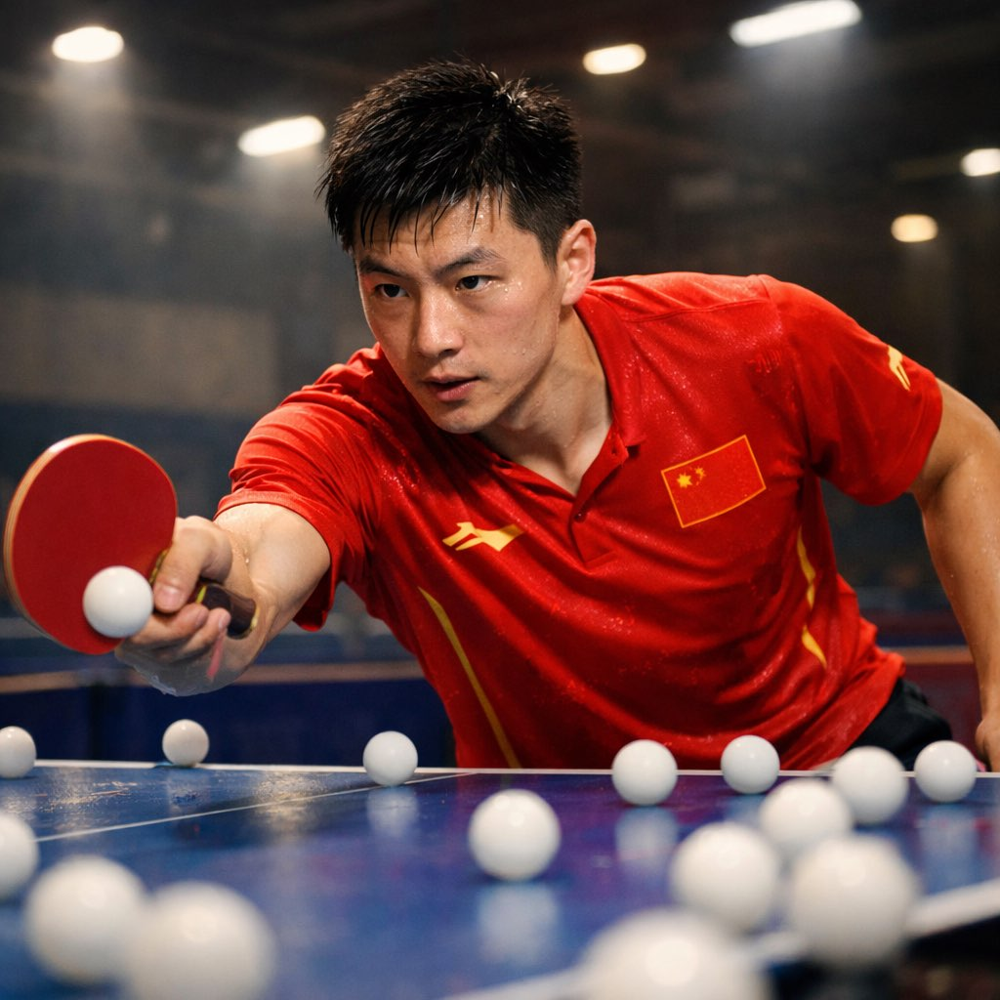
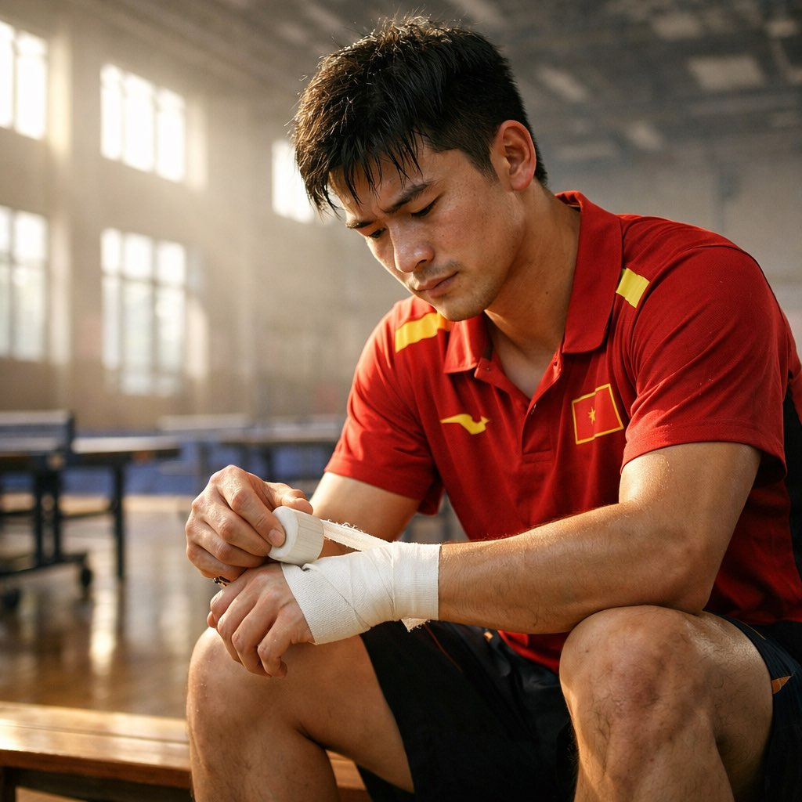
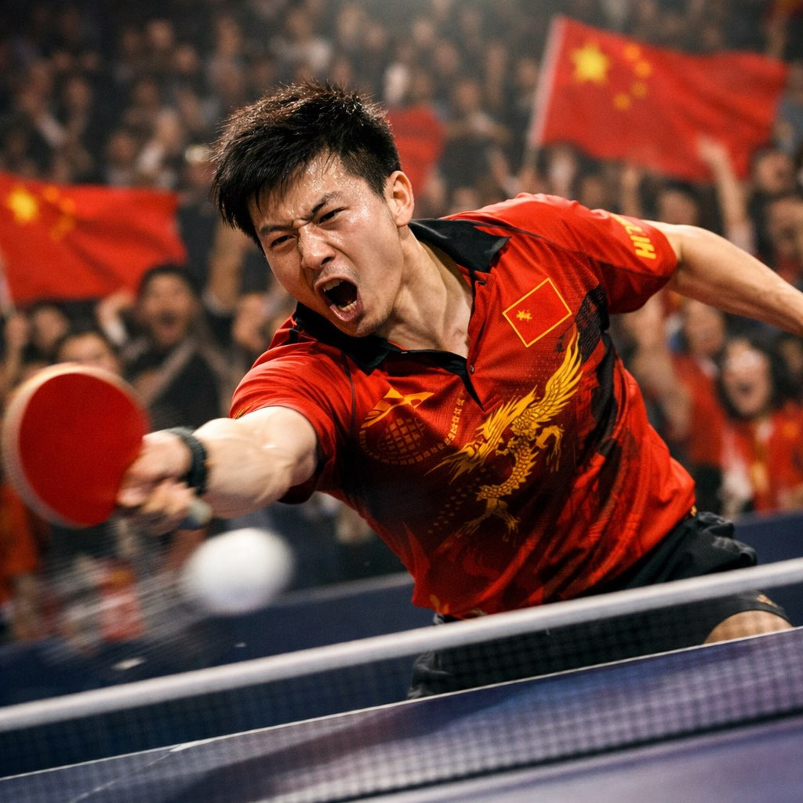

03月17日 · 06:30 · 国家队训练基地

又是被闹钟叫醒的一天。
六点半，训练馆的灯已经全开了。孙指导站在门口，手里拿着今天的训练计划——三页纸，密密麻麻。
上午全是正手连续拉，1000个球起步。
左手磨得发疼，但每一板的弧线都在告诉我：还可以更快、更转、更准。
中场休息，吃了根雪糕。孙指导看着我笑了一下，没说什么。
六点半，训练馆的灯已经全开了。孙指导站在门口，手里拿着今天的训练计划——三页纸，密密麻麻。
上午全是正手连续拉，1000个球起步。
左手磨得发疼，但每一板的弧线都在告诉我：还可以更快、更转、更准。
中场休息，吃了根雪糕。孙指导看着我笑了一下，没说什么。
💪🔥
03月18日 · 15:00 · 伤病恢复室

手腕又不舒服了。
重庆冠军赛输给松岛辉空那场，其实手腕就有信号。但比赛的时候哪顾得上？站在球台前，只有赢和输两个字。
队医给我做了超声，说"需要休息两天"。
两天？世界杯3月30号就开始了。
我坐在康复室的长椅上，把运动胶带一圈一圈缠好。左手必须握住拍子。这是我和全世界对话的方式。
隔壁训练馆传来乒乓球撞击的声音，节奏很快。是她在练球。嗯，那个人今天好像状态不错。
重庆冠军赛输给松岛辉空那场，其实手腕就有信号。但比赛的时候哪顾得上？站在球台前，只有赢和输两个字。
队医给我做了超声，说"需要休息两天"。
两天？世界杯3月30号就开始了。
我坐在康复室的长椅上，把运动胶带一圈一圈缠好。左手必须握住拍子。这是我和全世界对话的方式。
隔壁训练馆传来乒乓球撞击的声音，节奏很快。是她在练球。嗯，那个人今天好像状态不错。
03月19日 · 20:00 · 对练

今天跟队内做了模拟赛。
对手是小林，他模拟张本智和的打法——反手弹击为主，节奏极快。
前两局我有些紧，总想着手腕。第三局的时候，孙指导喊了一句：
"楚钦！别想手！想球！"
就那一瞬间，脑子里只剩下球的旋转。
正手暴冲——角度撕开——反手衔接——连得7分。
打完最后一球，我吼了一声。训练馆里的其他人都看过来了，我有点不好意思。但说实话——这种感觉太爽了。
对手是小林，他模拟张本智和的打法——反手弹击为主，节奏极快。
前两局我有些紧，总想着手腕。第三局的时候，孙指导喊了一句：
"楚钦！别想手！想球！"
就那一瞬间，脑子里只剩下球的旋转。
正手暴冲——角度撕开——反手衔接——连得7分。
打完最后一球，我吼了一声。训练馆里的其他人都看过来了，我有点不好意思。但说实话——这种感觉太爽了。
"全运会输给樊振东三次，每一次我都在想——他凭什么每个球都能上台？后来我明白了，那不是凭什么，那是十年如一日的肌肉记忆。我要做的不是超越谁，是超越昨天的自己。"
🏓✨
03月20日 · 22:30 · 宿舍
今晚睡前看了日本队训练的视频。
松岛辉空、张本美和……他们真的越来越强了。日本的"断代计划"在起效果，12岁进国家队，每天6小时技术训练加3小时AI战术分析。
但我不怕。
因为我知道一件事：乒乓球不只是技术，还是意志。
澳门世界杯还有10天。左手准备好了。
……手机弹出一条消息。"明天训练完一起吃饭？我请客 🍜"
发送者备注名是一颗太阳emoji。
我回了三个字："你定地方。"
然后翻了个身，嘴角忍不住往上翘了一下。
松岛辉空、张本美和……他们真的越来越强了。日本的"断代计划"在起效果，12岁进国家队，每天6小时技术训练加3小时AI战术分析。
但我不怕。
因为我知道一件事：乒乓球不只是技术，还是意志。
澳门世界杯还有10天。左手准备好了。
……手机弹出一条消息。"明天训练完一起吃饭？我请客 🍜"
发送者备注名是一颗太阳emoji。
我回了三个字："你定地方。"
然后翻了个身，嘴角忍不住往上翘了一下。
🏓 乒乓球
🇨🇳 国乒
💪 备战世界杯
🌟 左手传奇